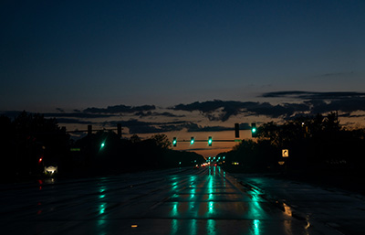

Fish Haven
Weather Summary
Currently:
Current Temp: °F
Humidity: %
Wind Speed: mph
Wind Chill: °F
5 Day Forecast
Little Fish Haven, Idaho, is paradise for residents

FISH HAVEN, Idaho — It's an undiscovered paradise. Most people who drive by recognize the raw beauty of a place ringed by
high desert mountains and bordered by the shores of a vast natural lake.
In winter the hills outside this small paradise echo with the sharp whine of snow machines and in the
summer thousands of tourists ply the lake's bright blue waters with water skis or fishing poles.
But they don't live there. It's different living in Fish Haven.
The little town sits just on the Idaho side of U.S. Highway 89 tucked in between Bear Lake's west side
and the mountains.
It's not technically a city or a town, it's really nothing more than the proverbial wide spot in the
road. But people call it a town even though there isn't a city council, just the Bear Lake County
Commission that oversees development there.
Only 50 to 100 people call it home, depending on the weather.
Read more at deseret.com
Contact Information
6516 State St Preston Idaho 83263
+1 (208) 569 5214
helpcenter@roadwayweatherchannel.com